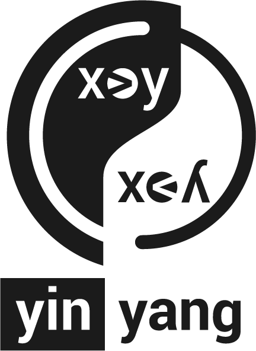

Dominik WintererPh.D. Student |
About
Dominik Winterer (CV) is a Ph.D. student advised by Prof. Zhendong Su at ETH Zurich and a member of the AST lab. He is interested in formal methods problems in Programming Languages and Software Engineering. Before his Ph.D. studies, Dominik did undergraduate research in Automated Planning (branch of symbolic AI) and interned at IBM research. Currently, he is researching techniques for testing SMT solvers and making them more reliable.Testing SMT Solvers
|  | Satisfiability Modulo Theory (SMT) solvers are foundational tools for many subareas of computer science, including formal verification, programming languages, and software engineering. Their reliability and robustness are crucial, especially for the safety-critical domains. However, effectively validating SMT solvers has been a longstanding challenge. The goal of Project Yin-Yang is to develop novel, effective, practical methods and techniques to help make SMT solvers more reliable, powerful, and usable. (more details) |
[Reports: YinYang, OpFuzz,TypeFuzz]

Selected Publications
Generative Type-Aware Mutation for Testing SMT Solvers


Jiwon Park*, Dominik Winterer*, Chengyu Zhang, Zhendong Su
In Proceedings of SPLASH/OOPSLA 2021 [slides / video abstract]
* Both authors contributed equally.On the Unusual Effectiveness of Type-Aware Mutations for Testing SMT Solvers
Dominik Winterer*, Chengyu Zhang*, Zhendong Su
In Proceedings of SPLASH/OOPSLA 2020 [slides / video abstract]
* Both authors contributed equally.Validating SMT Solvers via Semantic Fusion
Dominik Winterer*, Chengyu Zhang*, Zhendong Su
In Proceedings of PLDI 2020 [slides / video abstract]
* Both authors contributed equally.
 Distinguished Paper Award
Distinguished Paper Award
Invited to TOPLAS special issue on PLDI '20
Supervised Students
Altin Alickaj (Semester project, ongoing)
Mauro Bringolf (Master thesis, completed) → Software Engineer @University of St. Gallen
Jiwon Park (Bachelor thesis, completed)
- 2nd place@FSE '21 SRC
- Co-first author of OOPSLA '21 paper
Dylan J Wolff (Master thesis, completed) → Ph.D. student @National University of Singapore
Awards and Grants
Amazon Research Award 2022 (Co-PI)
Heidelberg Laureate 2022
Google Open Source Peers Bonus 2021 (for yinyang)
MLP Science Excellence finalist in 2017
IJCAI '16 Travel Grant Award
Travel Grant by Verband der Freunde der Universität Freiburg in 2016
Services
SIGPLAN-M Longterm mentoring (Oct '21 - now)
Program Committee Member: SYNASC '22
Reviewer TSE '21
Reviewer/Judge Student Research Competition: OOPSLA '21
Artifact Evaluation Committee Member: ISSTA '21, POPL '21, PLDI '22
Teaching
@ETH Zurich
Formal Methods and Functional Programming, Spring 2022
Software Engineering, Spring 2021 (Head TA)
Data Modelling and Databases, Spring 2020
Research Topics in Software Engineering, Spring 2020, 2021, 2022, Fall 2020
Compiler Design, Fall 2019, 2020, 2021 (Head TA)
@University of Konstanz
Decision Procedures, Fall 2018
Software Engineering, Fall 2018
@University of Freiburg
Model Checking, Fall 2016
Theoretical Computer Science, Fall 2016